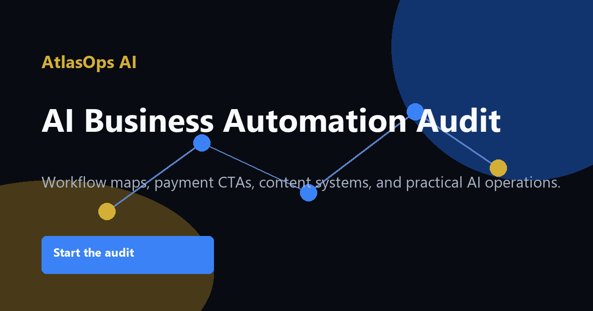
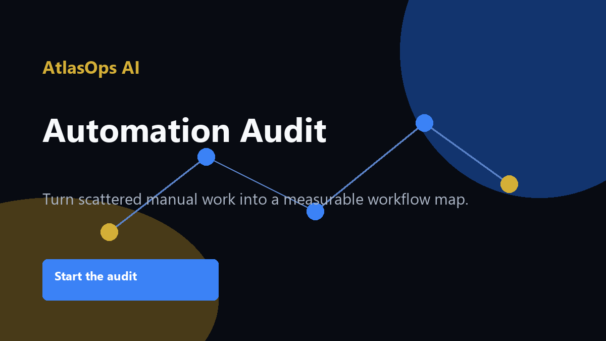
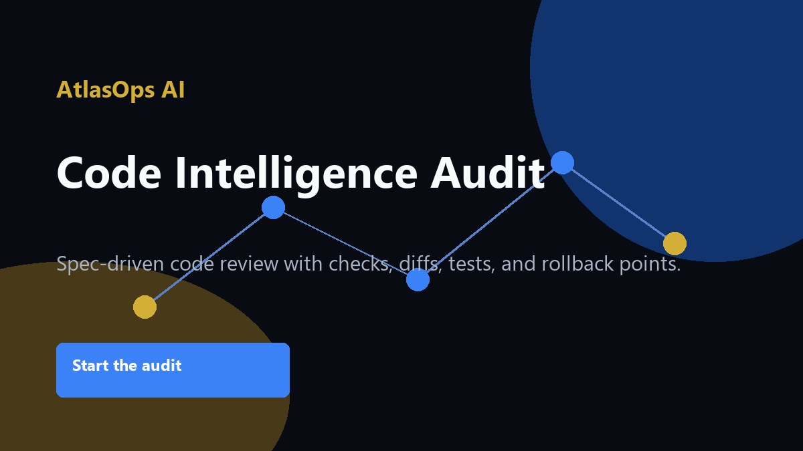
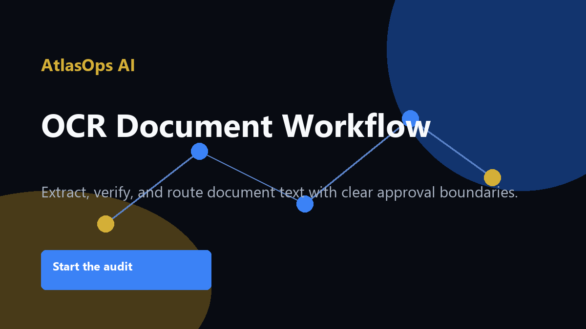

Audit
Review the workflow, content, website, and payment path.
AtlasOps AI helps operators, founders, and small businesses find automation opportunities, improve follow-up, strengthen content systems, and build practical AI-assisted workflows.

Review the workflow, content, website, and payment path.
Turn handoffs into a clear operating picture.
Identify practical AI and automation opportunities.
Create simple public-safe pages, CTAs, and workflow assets when approved.
Package the next steps into a delivery-ready roadmap.
A practical audit for businesses that want the first useful AI step: a workflow map, automation opportunity scorecard, payment/content funnel review, and 7-day roadmap.

Operators, founders, consultants, creators, and small businesses with manual follow-up, website, payment, or content gaps.
Starter Audit from $99
Workflow review, opportunity map, tool stack recommendation, marketing automation plan, risk checklist, and 7-day roadmap.
View serviceTeams that need better intake, follow-up, content, and campaign handoffs.
Quote-based
Marketing workflow map, automation opportunities, content cadence, and approval boundaries.
View serviceBusinesses that need a clear service page and payment path.
Quote-based
Static page structure, PayPal.me CTA, UTM links, tracked static /go routes, and content guard review.
View service
Operators who want a daily content machine without unsupported claims.
Quote-based
Source-backed post templates, queue, duplicate guard, UTM links, and manual-final-click workflow.
View service
Teams with codebases that need repair, documentation, or safer automation.
Quote-based
Code review, workflow plan, risk map, test recommendations, and delivery checklist.
View service
Businesses with forms, receipts, PDFs, screenshots, or repeat document handling.
Quote-based
OCR path, extraction plan, verification rules, workflow routing, and fallback handling.
View serviceRecent public-source AI and business automation signals, translated into practical operator moves.
OpenAI described enterprise demand moving beyond isolated copilots toward governed agents connected to company systems. For business owners, the practical lesson is to map the workflow and permissions before buying more tools.
Takeaway: Start with one workflow, one owner, and one approval gate before expanding automation across the business.
Read insightAnthropic announced a new AI services company with major financial partners to help mid-sized companies put Claude into core operations. The signal for AtlasOps is clear: business value depends on workflow discovery, implementation, and long-term support.
Takeaway: Use an audit to find the highest-value workflow before promising implementation.
Read insightGitHub made secret scanning through its MCP Server generally available, giving AI coding agents a safer pre-commit check. For AtlasOps clients, code intelligence work should include secret exposure checks before any public deployment.
Takeaway: Before publishing a site, codebase, or automation, run a content and secret guard and treat findings as blockers.
Read insightUse the PayPal CTA when you are ready, then send the workflow you want reviewed.
A practical review of one business workflow, website/payment CTA, follow-up path, and automation opportunity map.
A workflow map, opportunity scorecard, risk notes, suggested tools, and a short roadmap for the next useful automation step.
A public website link, the workflow you want reviewed, current tools, and where follow-up or handoff breaks down.
Payment is through PayPal.me. AtlasOps verifies payment locally from evidence before delivery.
Yes. Ask Atlas can answer basic service-fit questions by async email once the intake endpoint is connected.
Not through the public form. Deeper technical review requires explicit authorization and scope.
No. Ask Atlas is async email unless a real-time relay is configured and verified.
Do not send passwords, API keys, payment card data, private files, or sensitive customer data.
Usually within one business day once the intake endpoint and monitoring path are configured.
AtlasOps creates a local question/lead record, drafts a governed reply, and sends only after the configured email policy allows it.